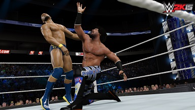

WWE 2K15 Review
The move to more powerful consoles has resulted in a prettier looking wrestling game, but also a far less enjoyable one.

The best thing I can say about WWE 2K15 is that it resembles the current state of the WWE’s television product. Not literally, mind you. 2K15 does mark the debut of the WWE series on the current generation of consoles, and that does come with the requisite bump in visual fidelity toward something more lifelike, but those visual upgrades don’t transform this game into a wholly accurate representation of the WWE we see on TV every week. WWE 2K15 resembles the WWE more in ramshackle spirit than anything else. 2K15 is a sloppy game, loose where it should be tight, sluggish where it should be exciting. Its newest pieces are either good ideas that haven’t been fashioned into something compelling yet, or flat-out mistakes that either need a complete repackaging or need to be forgotten by the time next year rolls around. Which is to say nothing of the various aspects of this franchise that have simply gone missing since last year, a number of which will be sorely missed by longtime fans.
0 comments
Be the first to leave a comment!